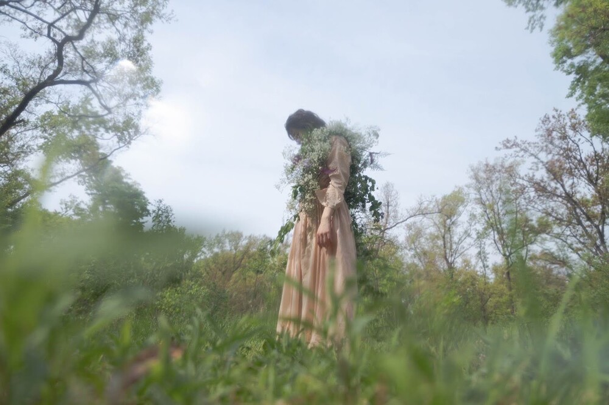
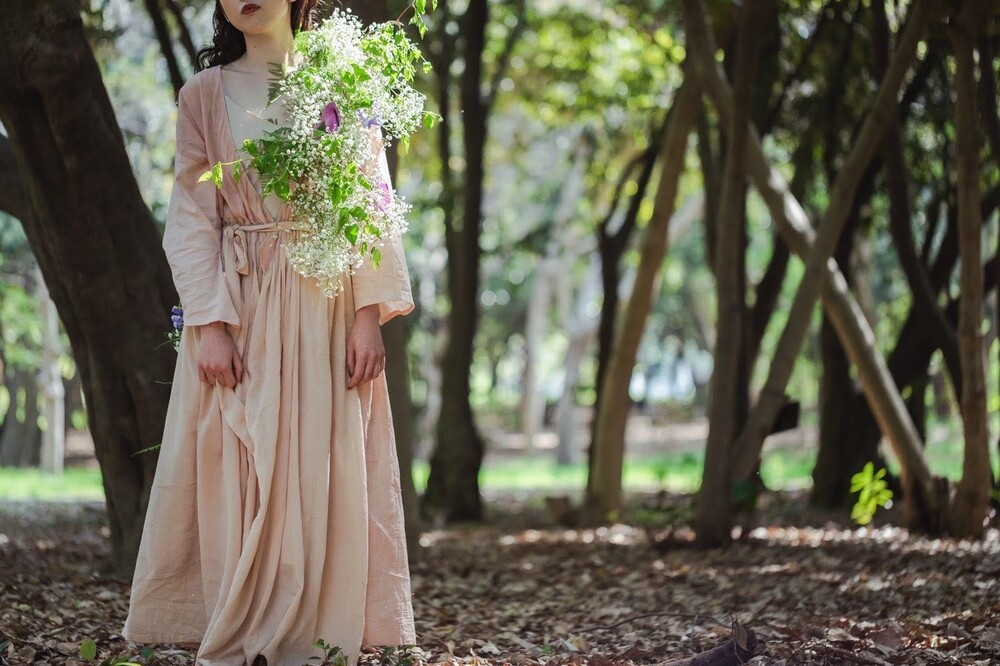
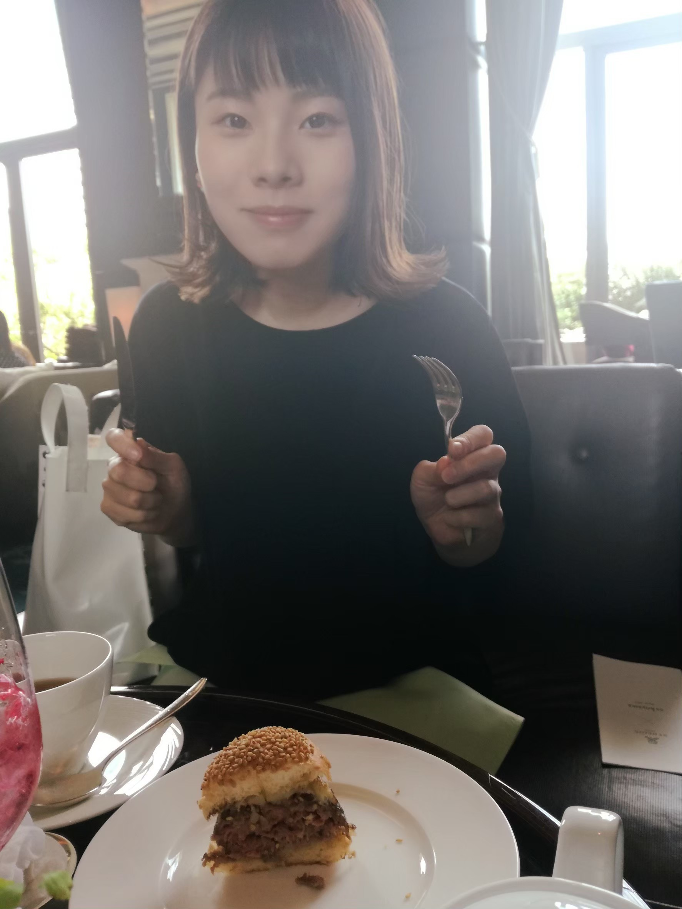
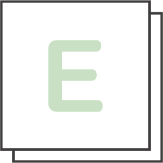
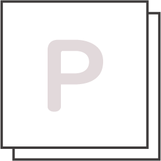

Profile

こもりあかね
1991年9月28日生まれ 和歌山県和歌山市出身
趣味・興味のあること：旅行、カフェ巡り、カレー屋巡り、猫、音楽鑑賞、ピラティスなど
幼少期からものづくりが好きで、絵を描いたり裁縫をしたり熱中して作ることに取り組んでいます。（ファーストビューの衣装は過去に制作したものです。）
テーラーを営む祖父母を見て育ち、高校卒業後、服飾専門学校で3年間ファッションデザインを学びました。
前職ではアパレル販売員として6年半勤務し、退職後、縫製士とECサイト運営の仕事を経験しました。
ECサイト運営の仕事を通じて、お客様との繋がりやブランドの魅力をオンラインで伝えられるWebの世界に強く興味を持ち、職業訓練校で6ヶ月間Web制作を学びました。
Skills
-
- Word
- ビジネス文書、差し込み印刷などの作成
-

- Excel
- 各種関数、ピポットテーブルなどを使用したデータ分析
- ●日商PC検定試験(データ活用2級) 合格
-

- PowerPoint
- 図形やアニメーションを使用したプレゼンテーション資料の作成
-
- HTML/CSS
- 初歩的なJavaScript、レスポンシブ対応が可能
- ●Webクリエイター能力認定試験HTML5エキスパート 合格
-

- Photoshop
- ロゴやバナーの作成、フォトレタッチ、フォトコラージュなど
- ●Photoshopクリエイター能力認定試験エキスパート 合格
-
- Illustrator
- パスを使用してアートワークの作成など
- ●Illustratorクリエイター能力認定試験エキスパート 結果待ち